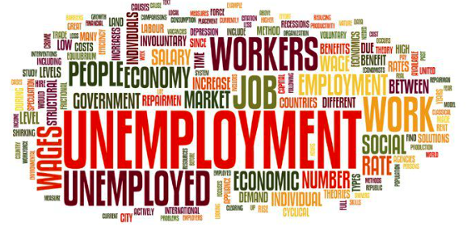

INTRODUCTION

Unemployment refers to a situation in which the workers who are capable of working and willing to work do not get employment. The official unemployment definition comes from the U.S. Bureau of Labor Statistics, which states that "People are classified as unemployed if they do not have a job, have actively looked for work in the prior 4 weeks, and are currently available for work." According to ILO "Unemployment refers to the share of the labor force that is without work but available for and seeking employment." According to Sociology "Unemployment is a term referring to individuals who are employable and actively seeking a job but are unable to find a job."